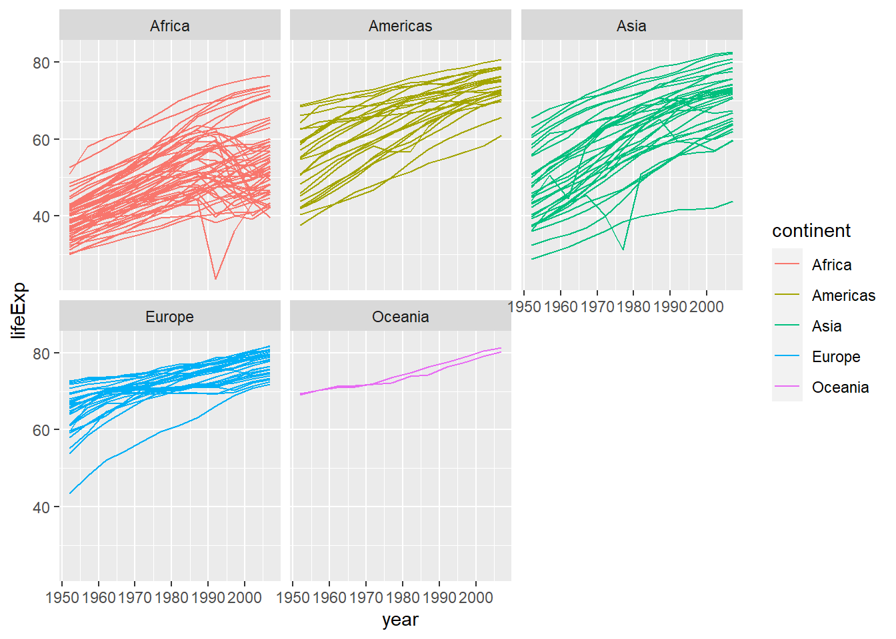
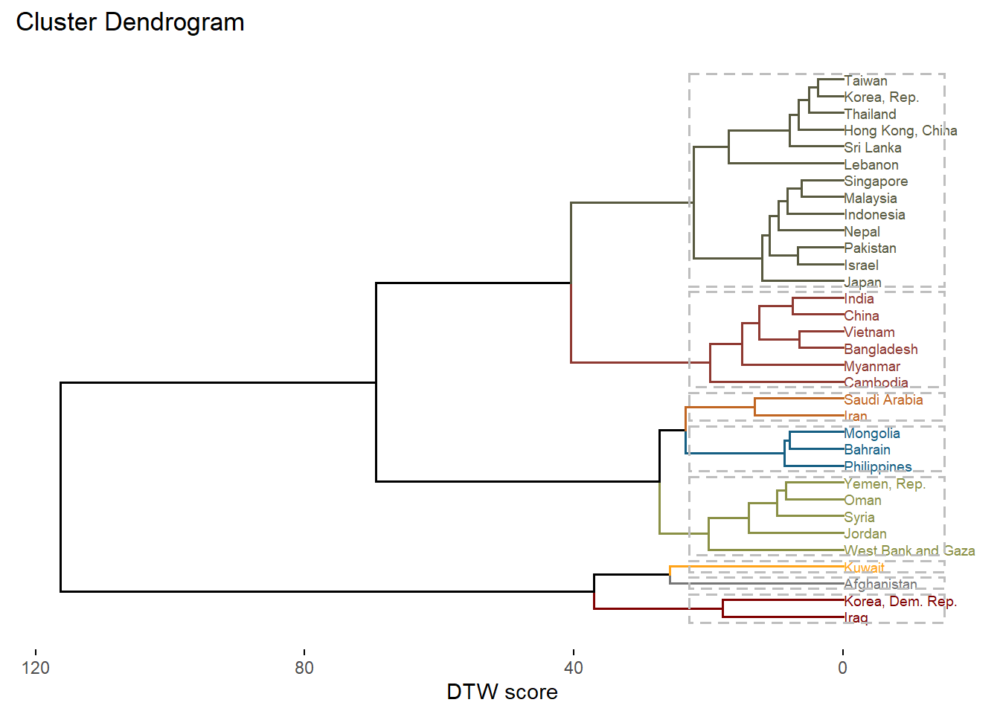
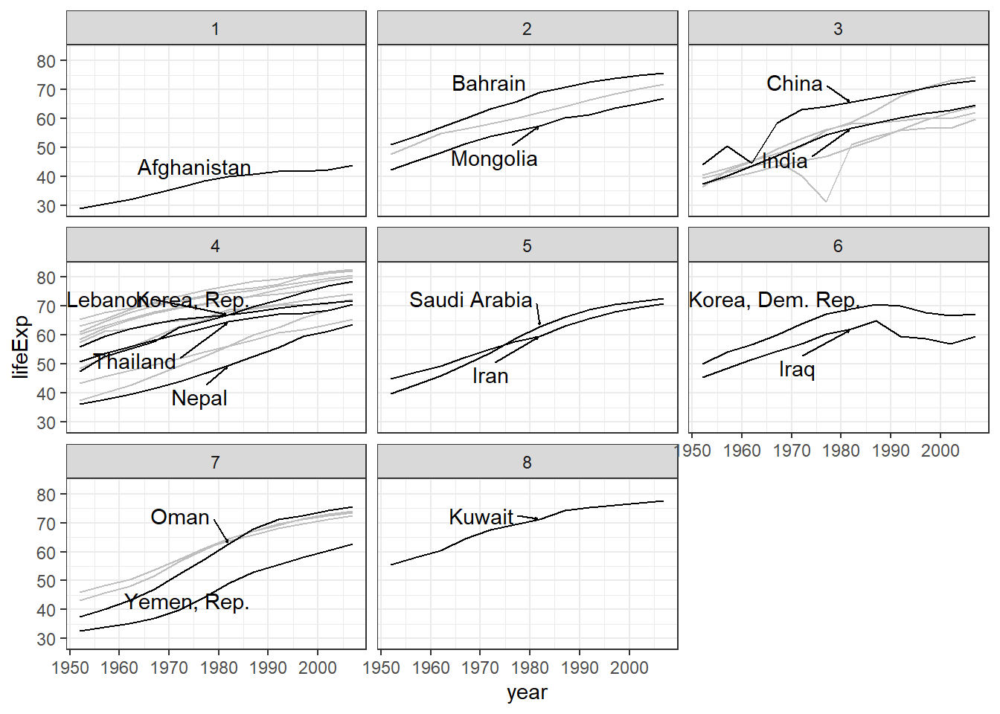
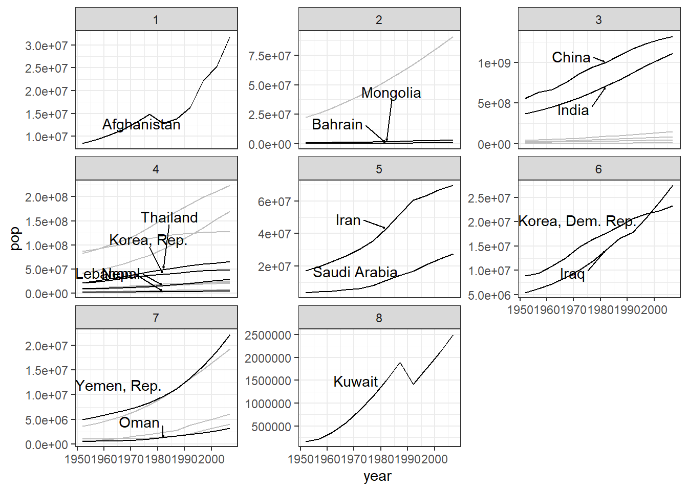

suppressPackageStartupMessages(library(tidyverse))
suppressPackageStartupMessages(library(dtwclust))
suppressPackageStartupMessages(library(factoextra))
suppressPackageStartupMessages(library(gapminder))
suppressPackageStartupMessages(library(ggrepel))Dynamic Time Warping and Hierarchical Clustering with {gapminder}
Goal
I want to find which countries are the most similar to each other in terms of their life expectancy, population and GDP over the years
Load packages
We’ll use dtwclust for hierarchical clustering using the dtw_basic as the distance measure. If you are not familiar with these methods, please read about dynamic time warping and hierachical clustering.
Data
We are going to use the gapminder dataset for comparing different countries. Let’s see the first few rows here:
gapminder# A tibble: 1,704 x 6
country continent year lifeExp pop gdpPercap
<fct> <fct> <int> <dbl> <int> <dbl>
1 Afghanistan Asia 1952 28.8 8425333 779.
2 Afghanistan Asia 1957 30.3 9240934 821.
3 Afghanistan Asia 1962 32.0 10267083 853.
4 Afghanistan Asia 1967 34.0 11537966 836.
5 Afghanistan Asia 1972 36.1 13079460 740.
6 Afghanistan Asia 1977 38.4 14880372 786.
7 Afghanistan Asia 1982 39.9 12881816 978.
8 Afghanistan Asia 1987 40.8 13867957 852.
9 Afghanistan Asia 1992 41.7 16317921 649.
10 Afghanistan Asia 1997 41.8 22227415 635.
# ... with 1,694 more rows
# i Use `print(n = ...)` to see more rowsPlot of life expectancy:
# Let's plot the life expectancy over years
# and represent each country by a line
ggplot(data=gapminder)+
geom_line(aes(group=country, x=year, y=lifeExp,
color = continent)) +
facet_wrap(~ continent)
Similarly, you can plot other variables to see their time-series.
Cluster Analysis:
Step 1) Choose the variables you want to use in calculating the dtw dissimilarity score
Here, I am choosing to use only the countries in Asia, and I am going to use life expectancy, population and GDP for the estimation of dtw score.
Also, it is important to scale all variables as right now they are in different scales. You can also scale them in the function that does the clustering.
### Function to scale a variable
scale_this <- function(x){
(x - mean(x, na.rm=TRUE)) / sd(x, na.rm=TRUE)
}
df <- gapminder %>%
filter(continent == "Asia") %>% # countries in Asia only
group_by(country) %>% # scaling the vars for each country
mutate(lifeExp = scale_this(lifeExp),
pop = scale_this(pop),
gdpPercap = scale_this(gdpPercap)
) %>%
ungroup()
df# A tibble: 396 x 6
country continent year lifeExp pop gdpPercap
<fct> <fct> <int> <dbl> <dbl> <dbl>
1 Afghanistan Asia 1952 -1.70 -1.04 -0.215
2 Afghanistan Asia 1957 -1.40 -0.925 0.168
3 Afghanistan Asia 1962 -1.08 -0.781 0.466
4 Afghanistan Asia 1967 -0.678 -0.602 0.310
5 Afghanistan Asia 1972 -0.273 -0.386 -0.579
6 Afghanistan Asia 1977 0.188 -0.133 -0.153
7 Afghanistan Asia 1982 0.466 -0.414 1.62
8 Afghanistan Asia 1987 0.656 -0.275 0.460
9 Afghanistan Asia 1992 0.823 0.0695 -1.42
10 Afghanistan Asia 1997 0.840 0.900 -1.55
# ... with 386 more rows
# i Use `print(n = ...)` to see more rowsStep 2) Split the data by each country and convert to a matrix
This is required by the dtwclust package.
df_matrix <- df %>%
split(.$country, drop = T) %>%
purrr::map(~ .x[, c("lifeExp", # names of all vars
"pop",
"gdpPercap"
)]) %>%
purrr::map(as.matrix)
### printing out df shows the matrices by country
str(df_matrix[[1]]) num [1:12, 1:3] -1.702 -1.402 -1.075 -0.678 -0.273 ...
- attr(*, "dimnames")=List of 2
..$ : NULL
..$ : chr [1:3] "lifeExp" "pop" "gdpPercap"Step 3) Use the tsclust function from the dtwclust package for clustering using the dtw score
Both steps are done using a single function:
clusters_gp <- df_matrix %>%
tsclust(.,
k = 8L, # assuming clusters
distance = "dtw_basic", # this is dtw score
seed = 390, # to reproduce results
type="hierarchical", # type of clustering
control = hierarchical_control(method = "ward.D")) # method in hc
clusters_gphierarchical clustering with 8 clusters
Using dtw_basic distance
Using PAM (Hierarchical) centroids
Using method ward.D
Time required for analysis:
user system elapsed
0.04 0.00 0.05
Cluster sizes with average intra-cluster distance:
size av_dist
1 1 0.000000
2 3 5.422677
3 6 8.436258
4 13 7.564260
5 2 6.603003
6 2 8.962541
7 5 9.061991
8 1 0.000000Plotting the results
A dendrogram (tree)
fviz_dend(clusters_gp, k = 8, # Cut the tree in groups
cex = 0.5, # label size
color_labels_by_k = TRUE, # color labels by groups
rect = TRUE, # Add rectangle around groups
horiz = TRUE, # Make the tree horizontal
ylab = "DTW score",
palette = "uchicago")Warning: `guides(<scale> = FALSE)` is deprecated. Please use `guides(<scale> =
"none")` instead.
Labeling countries based on clusters and visualizing each variable
We are now joining the estimated groups with the data:
Gps <- as.data.frame(cutree(clusters_gp, k = 8)) # num of clusters
colnames(Gps) <- "Gp"
Gps$country <- row.names(Gps)
row.names(Gps) <- NULL
## Getting the clustering info into the original data
gapminder_Asia <- gapminder %>%
filter(continent == "Asia") %>%
left_join(x=., y=Gps, by = "country")
gapminder_Asia# A tibble: 396 x 7
country continent year lifeExp pop gdpPercap Gp
<chr> <fct> <int> <dbl> <int> <dbl> <int>
1 Afghanistan Asia 1952 28.8 8425333 779. 1
2 Afghanistan Asia 1957 30.3 9240934 821. 1
3 Afghanistan Asia 1962 32.0 10267083 853. 1
4 Afghanistan Asia 1967 34.0 11537966 836. 1
5 Afghanistan Asia 1972 36.1 13079460 740. 1
6 Afghanistan Asia 1977 38.4 14880372 786. 1
7 Afghanistan Asia 1982 39.9 12881816 978. 1
8 Afghanistan Asia 1987 40.8 13867957 852. 1
9 Afghanistan Asia 1992 41.7 16317921 649. 1
10 Afghanistan Asia 1997 41.8 22227415 635. 1
# ... with 386 more rows
# i Use `print(n = ...)` to see more rowsPlotting each variable by group
Following plots show the time-series of life expectancy, population and GDP by group:
### Select 15 countries at random to label on plot
set.seed(123)
selected_countries <- gapminder_Asia %>%
group_by(Gp) %>%
select(country) %>%
unique() %>%
sample_n(size = 4, replace = TRUE) %>%
ungroup() %>%
pull(country) %>%
unique()Adding missing grouping variables: `Gp`sc_data <- gapminder_Asia %>%
filter(year == 1982,
country %in% selected_countries)
### lifeExp
ggplot(data = gapminder_Asia,
aes(x = year, y = lifeExp)) +
geom_line(aes(group=country), color = "grey") +
facet_wrap(~ Gp) +
geom_line(data = gapminder_Asia %>%
filter(country %in% selected_countries),
aes(group=country)) +
geom_text_repel(data = sc_data,
aes(label = country),
box.padding = 1,
nudge_x = .15,
nudge_y = .5,
arrow = arrow(length = unit(0.015, "npc")),
hjust = 0
) +
theme_bw()
### pop
ggplot(data = gapminder_Asia,
aes(x = year, y = pop)) +
geom_line(aes(group=country), color = "grey") +
facet_wrap(~ Gp, scales = "free_y") +
geom_line(data = gapminder_Asia %>%
filter(country %in% selected_countries),
aes(group=country)) +
geom_text_repel(data = sc_data,
aes(label = country),
box.padding = 1,
nudge_x = .15,
nudge_y = .5,
arrow = arrow(length = unit(0.015, "npc")),
hjust = 0
) +
theme_bw()
### gdpPercap
pp <- ggplot(data = gapminder_Asia,
aes(x = year, y = gdpPercap)) +
geom_line(aes(group=country), color = "grey") +
facet_wrap(~ Gp, scales = "free_y") +
geom_line(data = gapminder_Asia %>%
filter(country %in% selected_countries),
aes(group=country)) +
geom_text_repel(data = sc_data,
aes(label = country),
box.padding = 1,
nudge_x = .15,
nudge_y = .5,
arrow = arrow(length = unit(0.015, "npc")),
hjust = 0
) +
theme_bw()
ggsave("pp.png", plot=pp, dpi=600)Saving 7 x 5 in image